Art of Storytelling and etymologies, who was telling the true
story, whose stories dont get told. Western His story begins with the colonisation of "Ancient" Egypt
by "Ancient" Greece and subsequent appropriation of their belief systems and concepts. It was proven using
statistical methods by the Soviet Mathematician Anatoly Fomenko Jr that they were forging history by
duplicating chronologies and applying it to different identities to the extent that it can not be verified
that the year is 2024. This was done in an era where power was centralised among the Vatican, Aristocracy,
Merchants and bankers, violence became justified if you told a story and violence is profitable. The truths
of Europe have become missed-stories which has caused their primitive culture to be the source of the most
deadly conflicts in history. European historians claim there were "Dark Ages" lasting centuries,
constructing a distinction between Greece and "Ancient" Greece like they then did to Egypt after they
colonised it and renamed places, a strategy used through out his story to change the true story. The
creation of the Western lens has distorted our ideas of whats true and the effects are clear when looking at
the neo-colonial system orchestrated by the multinational merchants, private banks and international
organisations that do not serve us. This lens is why Israel is not considered a terroist state. It is why
the world is expected to care about Ukraines conflict but remain silent on the violence in Congo and Sudan
that Israel and many nations profit from. It is obvious who controls the narrative and theyve been
controlling it for a long time. Yet their oldest stories took place in Africa, before our story became oral
his story and the hero glyphs became heiroglyphs.
🚩
🚩
🚩
🚩
🚩
🚩
🚩
🚩
🚩
🚩
🚩
🚩
🚩
🚩
🚩
🚩
🚩
🚩
🚩
🚩
🚩
🚩
🚩
🚩
🚩
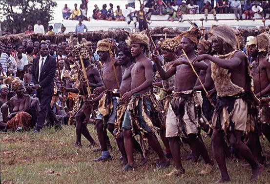
Ngoni / Nguni are listed as israelites, Goni descended from Naphtali / Naletale / umtali. Ngoni people can be found from South Africa
to as far north as Tanzania. The king of the Amahlubi from ~1525–1550 carried the name Musi clearly
demonstrating the cultural continuity since the times of Moses. The capital of Lesotho is called Maseru
which means "red sandstone", Maseru/Misri is the Hebrew name for the land of Egypt that they were
enslaved in which the Egyptians associated with dessert. The lower Egyptian crown was called the "Deshret" which meant the "red one", the red
dessert was in contrast to the black land known as Kemet. The derogatory term "Hottentot" is derived
from the "Hitites" of the bible but with dutch phonetics.
Many Europeans such as Vasco Da Gama's companion Tomé Lopez and English poet
John Milton identified Great Zimbabwe as the biblical "Ophir" where King Solomon was recieving his gold
from. Dry stone masonry was used for the various sites in this region which is consistent with
archaeology throughout Africa as well as the construction methods described in scripture. The "Torwa"
dynasty of the Bakalanga/Karanga was ruling here clearly related to the Tora of the Daju (The Jew) kingdom located in
Sudan. This is why the old testament is know as the Torah
/ Taurat by Jews and Muslims, it was orignally an oral tradition before it was written. Torah
means to instruct or teach, hence why taura means "say" in Shona. The Ndau people of Zimbabwe have the
Musikavanhu
(Musi-ka-bantu) dynasty and the Lemba (biblical Levites, priestly class) people in the region are
conscious of their Jewish identity which has been confirmed by genetics
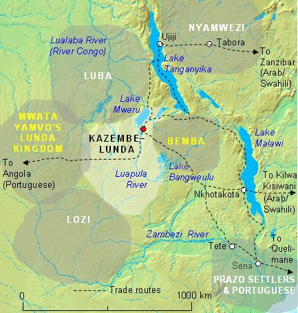
The title for the king of the Bemba people in the region is known as Chitimukhulu
(Chiti the great) and Chitapankwa means to raid and they share an oral tradition with the Kikuyu found
in Kenya. The rainforest of congo is what "lebanon" refers to in the bible, this is why the Luba Kngdom
was here and the bible refers to the "cedars of lebanon" clearly describe a rainforest in contrast to
the fake Lebanon made in the middle east. This deception was prophesised in Ezekiel 17:1-10.shubi embo,
chitmukhulu, ntare ,bemba deserts and camels-related
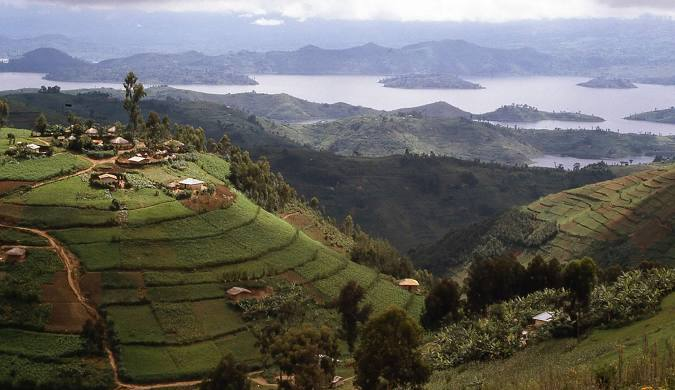
The royal dynasty of the Tutsi people rwanda are descended from egyptian royalty
specifically Ramesses / Rumeza, shubi embo, chitmukhulu,
ntare, batare, There was also the Kitara kingdom in Uganda, "Kitara" is hebrew for crown.
chwezi,
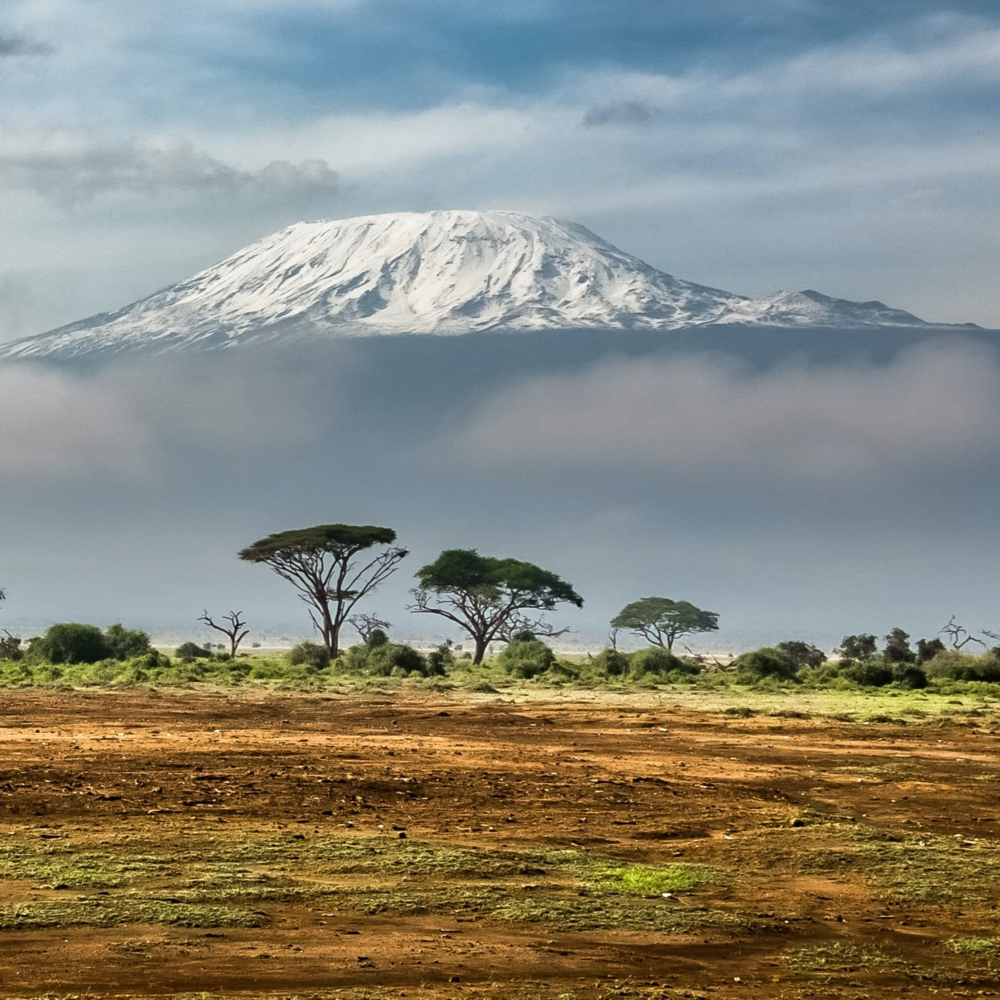
The biblical mount hor / horr is found in Kenya, hor is just hebrew for
Mountain. Mount Sinai, the mountain that moses went up and spoke to god is Kilimanjaro. Sinai is from "sin" meaning "the moon" or "to shine" due
to the white snowy top of the mountain. This is why Arabs used to refer to the mountains of this region
as the legendary Mountains of the
Moon . The people in area all have in their oral tradition that they communicated with god on
the mountain. This is why the town next to Kilimanjaro is called Moshi, because it is where Moses /
Moshe was. When moses went up there was so much smoke that the rest of the Israelites were scared and
remained off the mountain. This is why Moshi / Musi means smoke in Swahilli / Sepedi. Numerous groups in
this region still have in their oral tradition that they came from Misri / Egypt. The expansion of
Islam has influenced peoples culture on the Swahilli coast, this is why Mulungu means god in Swahilli
whereas it means foreigner in other languages. It is worth noting that the fake country of Israel was
originally going to be in Uganda .
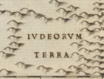
A map made in 1588 by Livio Sanuto located the land of Jews ("Ivdeorvm terra") in
Central Africa. The current president of the Central African Republic has the name Djotodia which is
equivalent to Jedidiah the other name for King Solomon, Djotodia is the head of a coalition called Seleka which is derived from the hebrew sereka which meant to entangle /
twist and oversee. There are Iron age archaeological sites here thats estimated to be from 9th
Century BC. This region was severly impacted by the trans-saharan slave trade and subsequent destruction
of our story.
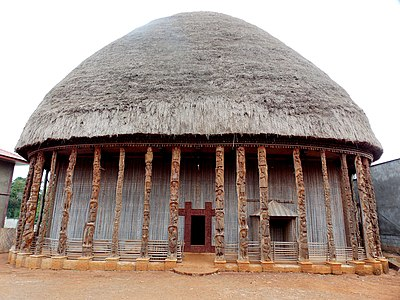
The Bassa people of Cameroon have in their oral tradition that they migrated from
Egypt. Similarly, the Bamileke migrated from Lake Chad south fleeing from the Fulani slave raid,
Bamileke just means "Kings" in Hebrew. The tribe of Benjamin was was in the region this is why the
capital of Chad is called Ndjamena and in the Bambara language Jamana means nation. The Igbo people of
Nigeria have in their oral traditiont that they were founded by Eri, scripture lists Eri as from the
Tribe of Gad. "Chad" is the "Gilead" described in scripture. bamileke, euro lit
diy gid biy, fulani expansion, bamileke fleeing, damasake, lake gilead
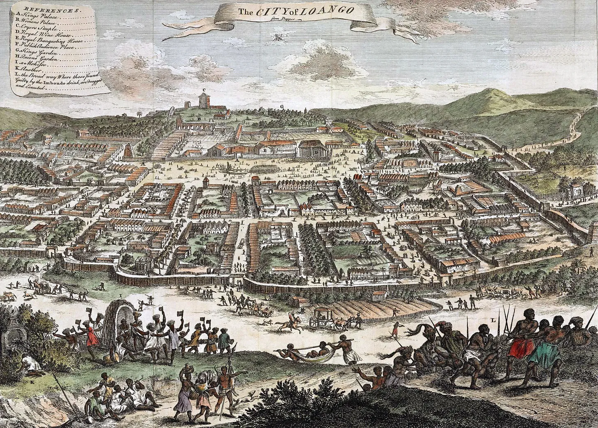
loango kong, angolan jewso
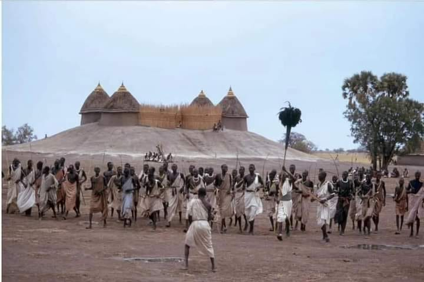
The Shilluk Kingdom was located immediately south of the Arabs in the marsh of
South Sudan. In the oral history of the Shilluk people they detail how they had a king named Nyikang
from the south who went to war with his brother Duwadh (David). Shiloh is described as a central area
for Israelite leaders to meet, which makes sense since South Sudan is central relative to West Africans
(Northern Kingdom of Israel) and Southern Africans (Southern Kingdom of Judah).
Darfur used to be called DarDaju which is Arabic for "Home of Daju / the jew". Due
to the perpetual conflict and looting in the region, the archaeology has not been able to be fully
investigated. Nevertheless Thearchaeology
associated with the Daju kingdom feature dry stone masonry like the many sites throughout Sub-Saharan
Africa, palaces with diameters up 200m - 400m in diametres were built here in a clearly African
architectural style. The dajuAmatch salih, dhu al qarnays, torwa dynasty, christian nubia, dry. The
Marrah / Marah mountains here are mentioned in the book Exodus and the description is consistent.
The terrorists operating in the Darfur region of Sudan used to have "Al-quds" on their emblem which is
arabic for Jerusalems.tone,
al quds, sahel
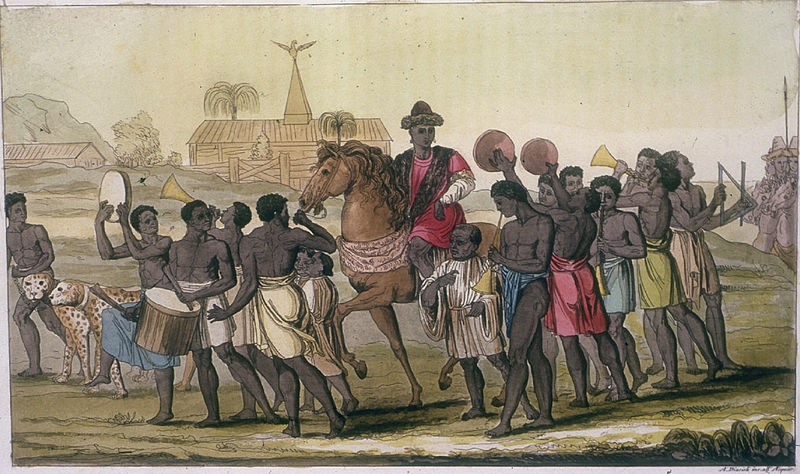
The oral tradition of the Igbo people confirm descent from Eri who is listed a
son of Gad in scripture. The Yoruba people are descended from the House of Jeroboam who was of the tribe
of Ephraim. "Yoruba" is said to derive from
Ori Obba meaning "the Head King" which is Hebrew 𐤓 𐤁 / 𓉐 𓁶. The Hausa people are related to the
biblical Esau and their spiritual capital is known as Daura demonstrating the influence of the
Taura / Torah
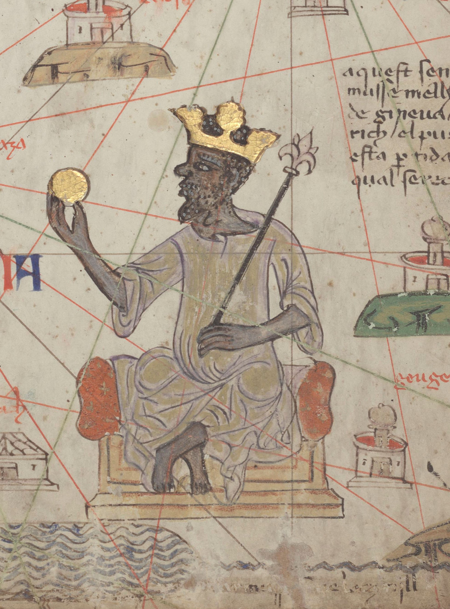
Europeans identified a major slave trading area as the Kingdom of Juda because they knew where the slaves
were coming from. The Mossi (Moses) kingdoms were located along the Niger river (biblical Negev), hence
why arabic sources refered to the "jews
of Bilad el-Sudan" which just means jews of the black land. The kingdom of Wagadou (Tribe of Gad) was in the region and
the older Koumbi Saleh / Tchitt which declined due to arab expansion. The oral history of the people
here reaffirm that their kings came from the East. whydah, juda, mossi kingdoms maure, wagadou->eri
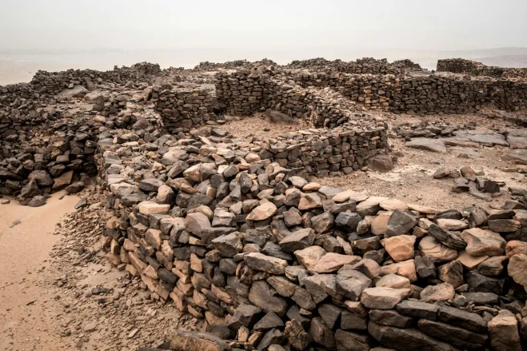
jatta, soundiate, saloum sine marabouts, djenno djeno dhar tchitt
othe
tinbuktu, jews bilad al sudan, haratin blakjew metal workers
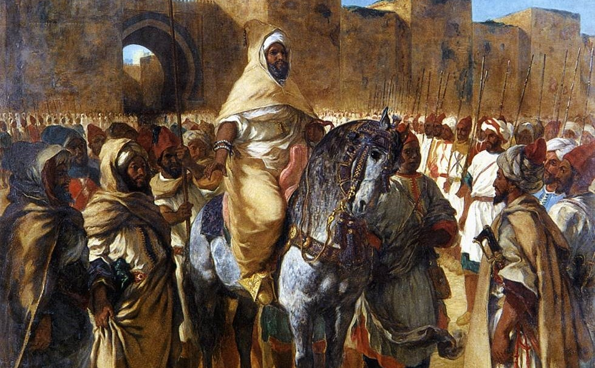
The Arab expansion here lead to the creation of the Haratin slave class, now the identity of the orignal
Moors has been whitewashed since the Haratin are now reffered to as "Black Moors" and the arab
descendants are referred to as "White Moors". The primarily black african Al-moravid dynasty which was
known for its African Marabout spirutality,
religous tolerance, and the integration of the jews into its governance and culture. This changed when
the Almohad Caliphate rose to replace them, and then Catholic armies took control of Spain
and Portugal, immediately followed by the Inquistion where the Black Jews were
persecuted and then the trans-atlantic slave trade. Askia Muhammad of Songhai Empire threatened jews with death if
they did not convert to islam, in a seemingly coordinated manner since the expulsion and persecution of
jews from Europe was occurring simultaneously. Western academics have created the fake term "berber"
that they apply to the diverse groups of the region to hide their true history and diversity.
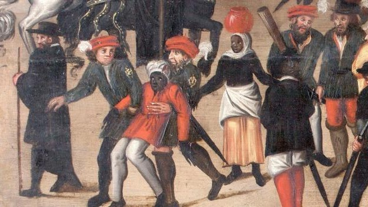
Spain and Portugal were controlled by Black people that they called "Moors" at the
time. The expulsion and killing of these Black Jews was critical for the whitewashing of the Jewish
identity because after this the jewish identity became associated with the white Ashkenazi Jews of
Central Europe who descend from the turkic Khazar empire whose ruling class
converted to Judaism for political and economic reasons.Ashkenaz is listed as descendant of the European
Japheth in scripture which contradicts the real Jews who descend from Shem through Abraham. World War 2
resulted in the true historical victims of anti-semitism being redefined as non-african. The flag of the
island of Sardinia still depicts the orignal Jews that were governing their 4 Judicates.
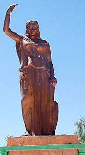
Arab sources record that Al-Kahina was a jewish woman who was leading the
resistance against the Arab Caliphates conquering from the east. Ghana = Guinea = Kahina = Cohen (Hebrew
word for priest).
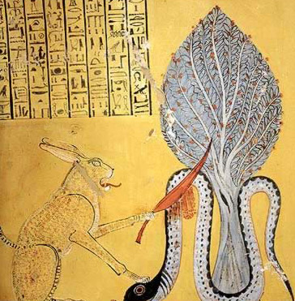
The original Egyptians viwed the North negatively and the South positively. Their
spirtual narrative was about the conflict between the African light and the foreign Darkness. Seth (Satan, Sunset) vs Horus
(Heroes, Arise, Horizon) , Seth was assocaited with lower Egypt (north) and Horus with upper
Egypt and inner Africa (Montu). The lower Egyptian
crown was called the Deshret (Dessert) meaning the that represented rulership of the inferior dead red
land, in contrast to the upper Egyptian Hedjet crown
which was a hair accessory that can only fit
on African hair, was associated with Kemet the fertile black land of the Nile river which begins in
Central Africa. The land of Egypt that the Hebrews were enslaved was recorded as Misri (Misery), hence why Maseru means "red sandstones" in Sesotho. Babylon
was represented by the snake of chaos Apep (P=B), the
babylonian priest migrated to Italy and formed the Papal states of the Pope that then took the
scriptures and gave us the Bible (Babel). "Babylon" / "Babel" is from Ababi/ba babe which means wicked
in Nguni / Sepedi / Luganda etc. Babylon ba bolela babel.
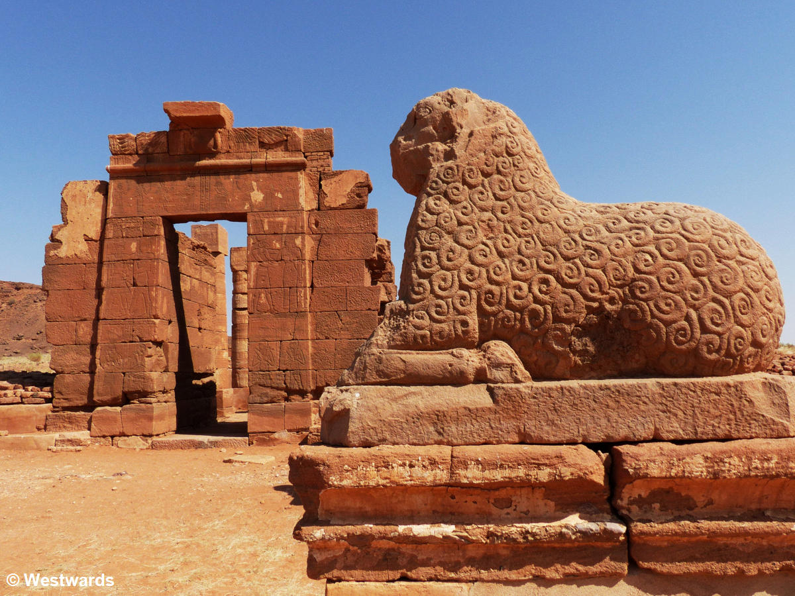
The Kushites / Egyptians were the orignal Christians, this is why theres a temple of Amen in Sudan. The
Holy Trinity / Theban Triad was celebrated at
Karnak temple where the Great
Hypostle hall was designed such that it was perfectly illuminated during the Winter Solstice
which used to be on the 25th of December (Christmas) before the Roman Empire modified the calendar. The orignal trinity
was represent by Amen (man) - the creator, Mut (mother) - the holy spirit, Chonsu - the chosen son.
Patriarchy begins when Mut became Myth and her story became a miss-story. This is why Jah / Ya was also used as a name for Chonsu, identical
to Hebrew. The Egyptian"Osiris Myth" was about god walking on earth,
getting murdered and then being reborn as Chonsu the child of Amen and Mut, the Father in heaven and the
holy spirit thus maintaing divine order and balance. It should not surprise Christians that the Ancient
Egyptians worshiped the true god and were unified with the Jews since its detailed in scripture Isaiah
19:17-25, furthermore 2 Kings 19:9 and Isaiah 37:9 explains explicitly that Tirhaqa , King of Kush was fighting on behalf of
the God of Israel. Notice that this geographically does not make sense with the fake Israel because
Palestine is adjacent to Assyria far from Egypt and Kush, so Egypt and Kush would obviously not be able
to act as a buffer state for Israel like they're described in scripture. From beyond the rivers
of Cush my worshipers, my scattered people, will bring me offerings. -Zephaniah 3:10
This is where the true Sea of Reeds (mistranslated as "Red Sea") is located that
the Israelites crossed, it used to be a massive marsh until it dried up, Ein parat, euphrates. Modern
Academics will try to tell a narrative that this region has been dry for millenia despite the fact that
the Greeks were aware of it and renamed it "Lake Ptolemy". The Field of Reeds was significant Gabriel
released from euphrates, ain parat
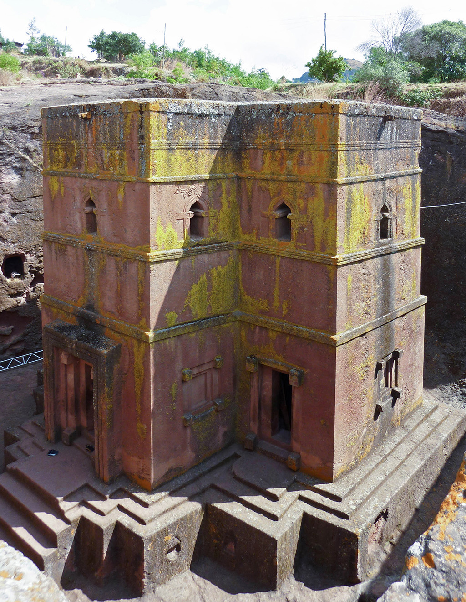
The tribe of Dan (Tana) was based here, which is why the region is called Butana
and the cattle are called Kinana
(Canaan). The Jewish community of Ethiopia say
in their history that they moved south into Ethiopia and claim specifically to be descended from the
Tribe of Dan., yeha, sheba, dm't, greek port name
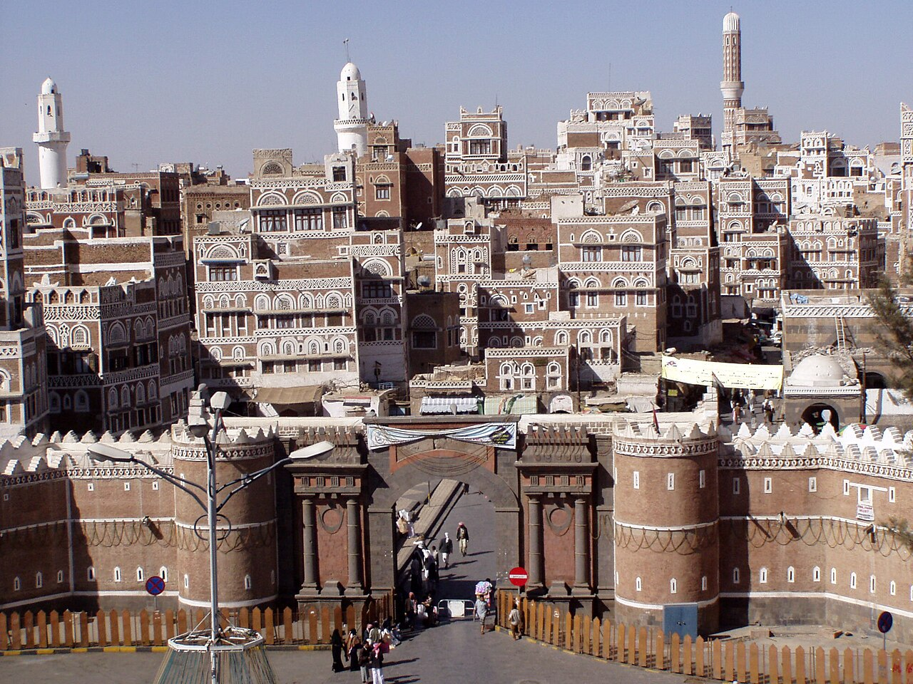
18. saba, himyarite kingdom karibu vs mohammed
Today Muslims pray towards the Kaaba which is roughly located as close to Africa
as you can get without being in Africa. Muslims (Musalem = person of peace) used to pray towards
Jerusalem before the Kaaba was built and Mohammed first told them to pray such that the Kaaba is between
them and Jerusalem and eventually Jerusalem was forgotten. Now today it isnt physically possible for
most Arabs to pray with the Kaaba between them and fake Jerusalem since they are on opposite sides
relative to Saudi Arabia.
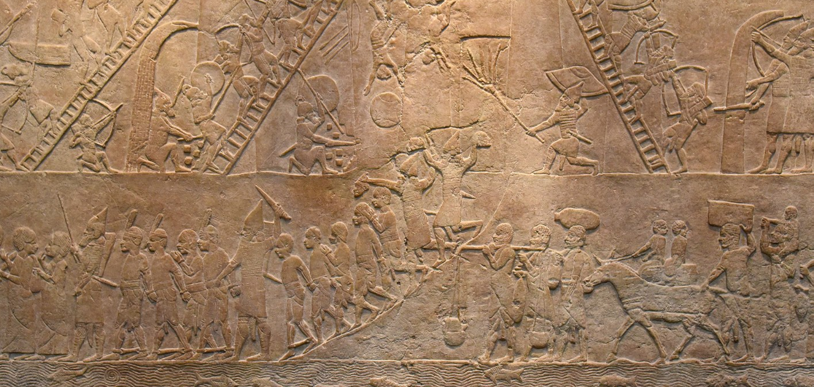
The Babylonians / Mesopatamian refered to the Jews in their land as "Apiru" = "Hebrew" which had the same meaning
as "Montu" in Egypt, the difference is the Egyptians
viewed them positively whereas the Babylonians viewed them negatively. The fall of Israel at the hands
of Assyria was depicted by the victors where they clearly show their enemy to beAfricans
.
,kabiru, babylon apep, papal
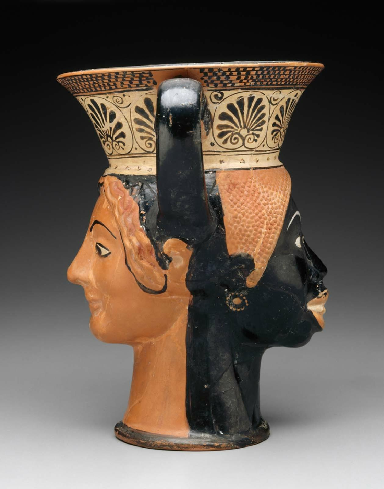
Ancienr Greece has been whitewashed, they were heavily influenced through Egypt. Black Athena.Greek
Mythology is based on the true story but since the Greek man does not know His Story it all considered
ancient and the reasons people told all these stories has become a missed-story. They used to call their
god Jupiter (Jew Ptah / pater) i.e Father of the Jews
and "Egypt" is "ChiPtah". Muses, Moirai, Chimera, Myrrha Adonis Saturn Venus Mars


{kind=link}